본문
- 편의시설
- 롯데몰 수지점의 편의시설을 이용해보세요
-
-
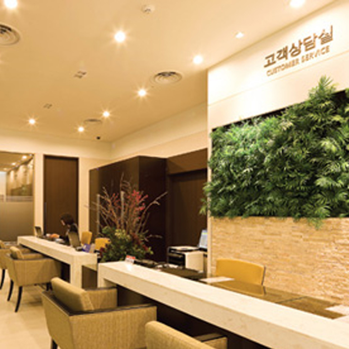
고객상담실
이용 중 불편하신 사항에 대해 방문해 주시면 편안하고 만족스런 쇼핑이 될 수 있도록 고객님 입장에서 신속하게 처리해 드리겠습니다.
전화02-6116-5002 위치롯데몰 2F -
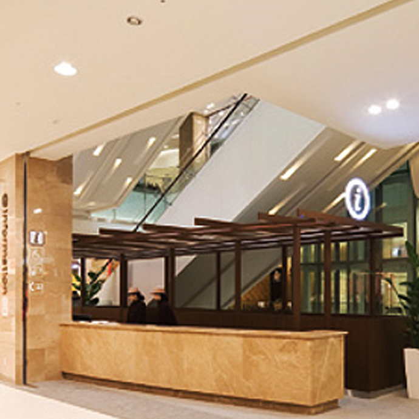
안내데스크
고객 시설 및 매장 위치 문의 등 쇼핑 관련 도움이 필요하신 사항에 대해 신속하고 정확하게 안내해 드립니다.
전화02-6116-5002 위치롯데몰 2F -
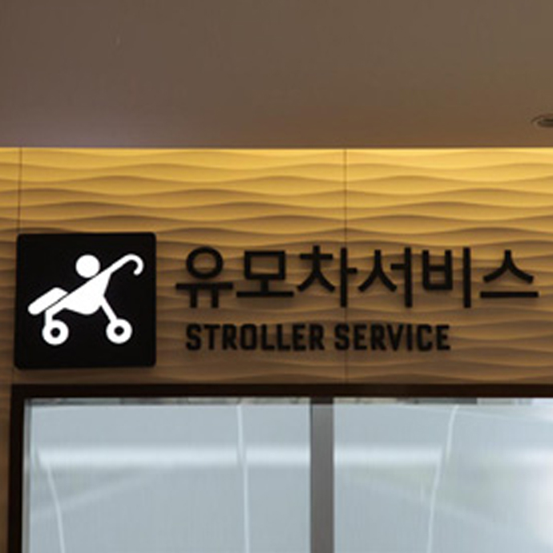
유모차 대여소
유아 동반 고객의 쇼핑 편의를 위하여 유모차를 무료로 대여하며, 장애인 휠체어도 함께 대여하고 있습니다.
전화02-6116-5002 위치롯데몰 2F
-
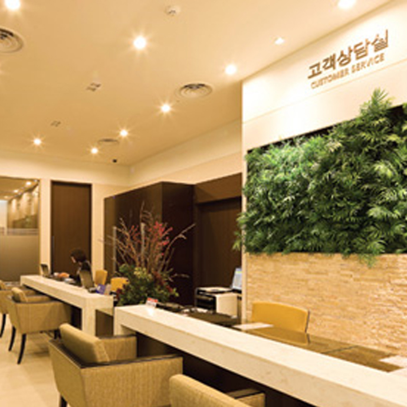
-
-
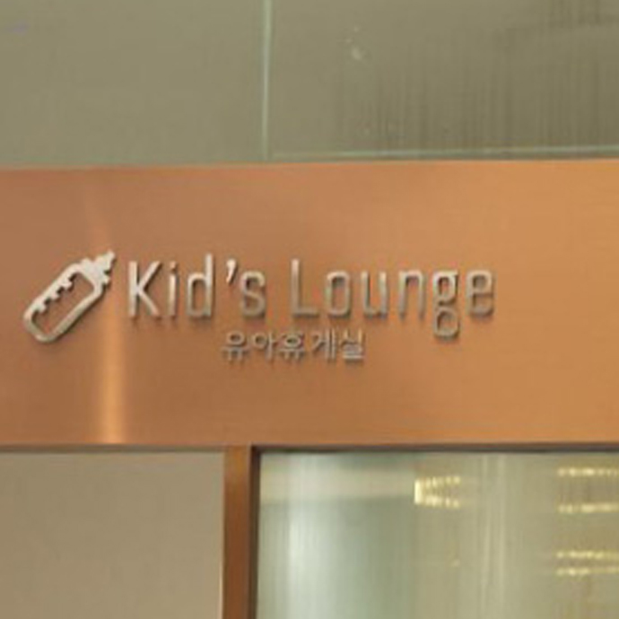
유아휴게실
가족과 함께 쇼핑을 즐기시는 고객님들을 위한 유아 휴게실에서 편안한 휴식을 즐기세요.
전화02-6116-5002 위치롯데몰 2F -
롯데마트 문화센터
행복한 만남, 열린 공간 롯데마트 문화센터는 최고의 서비스와 다채로운 강좌, 전문 강사진의 구성을 통해 문화적 가치를 전달하는 열린 공간입니다.
전화02-6116-5002 위치롯데몰 2F -
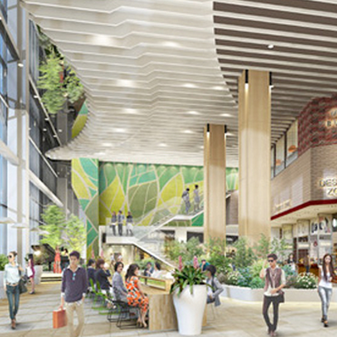
그린홀
자연을 닮은 인테리어와 10m 높이의 탁트인 전경으로 도심 속 정원에 온듯한 느낌의 특별한 공간. 단일층 국내 최대 면적의 식당가도 만날 수 있습니다.
전화02-6116-5002 위치롯데몰 2F
-
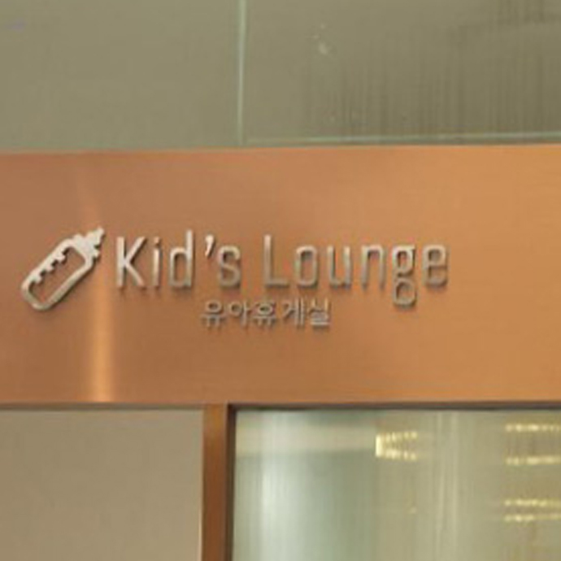
-
-
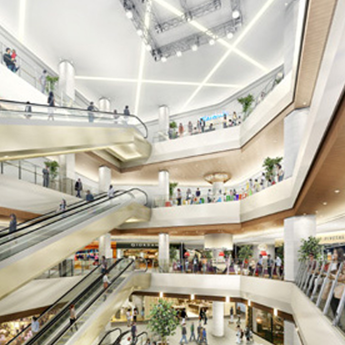
센터홀
고객 커뮤니케이션 공간.공연, 전시 등 다양한 이벤트를 경험할 수 있습니다.
전화02-6116-5002 위치롯데몰 2F -
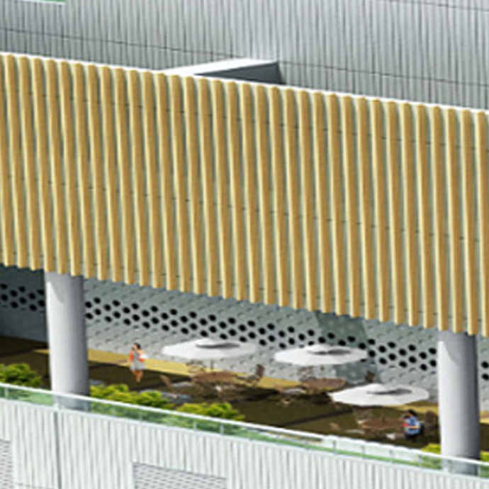
테라스가든
편안한 여가와 휴식이 있는 야외 테라스.은평의 도심을 바라보며 상쾌한 바람과 공기를 느껴보시기 바랍니다.
전화02-6116-5002 위치롯데몰 2F -
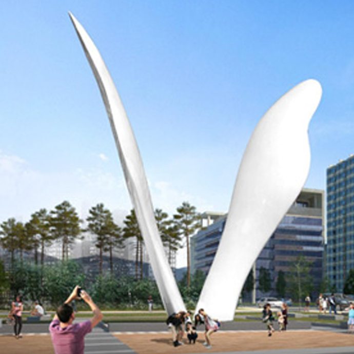
외부광장
마을의 입구이자 쇼핑몰의 입구. 연인, 친구, 소중한 사람들과의 만남의 장소가 되는 곳입니다.
전화02-6116-5002 위치롯데몰 2F
-
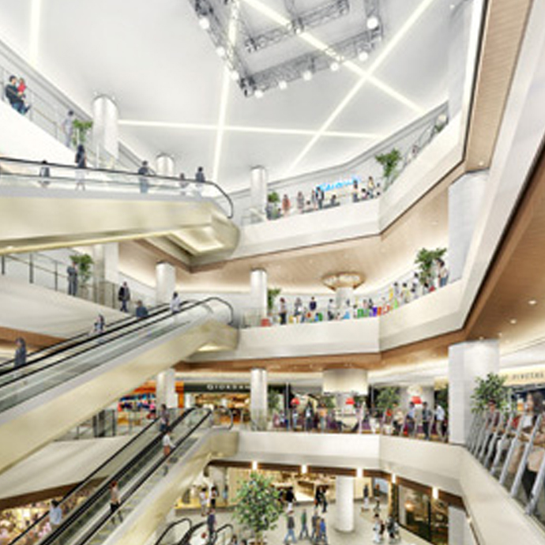